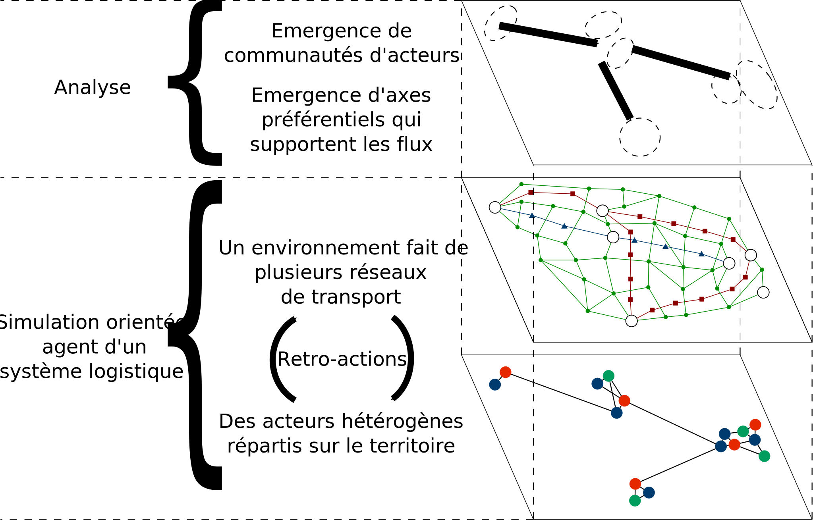
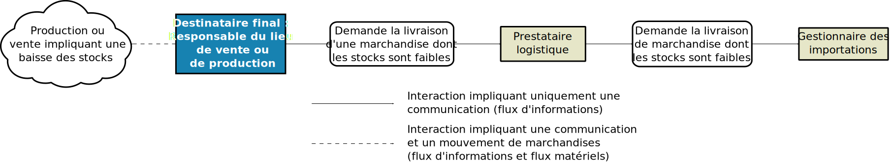
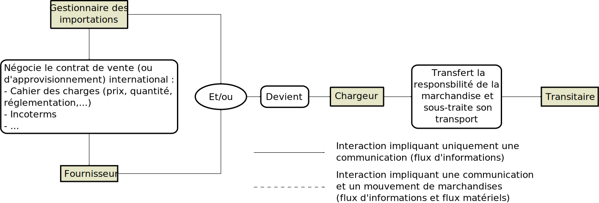
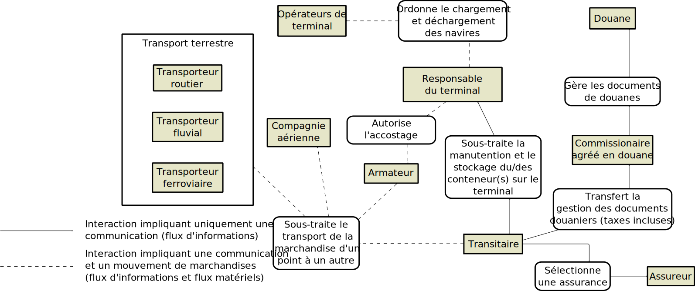
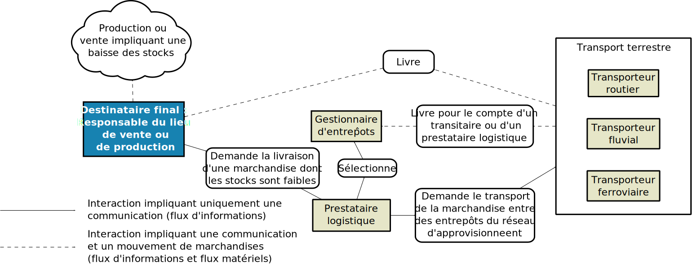
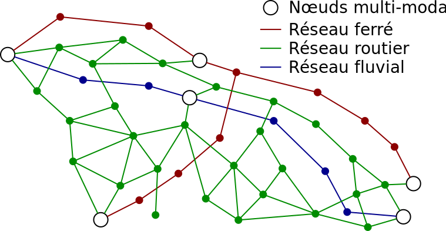
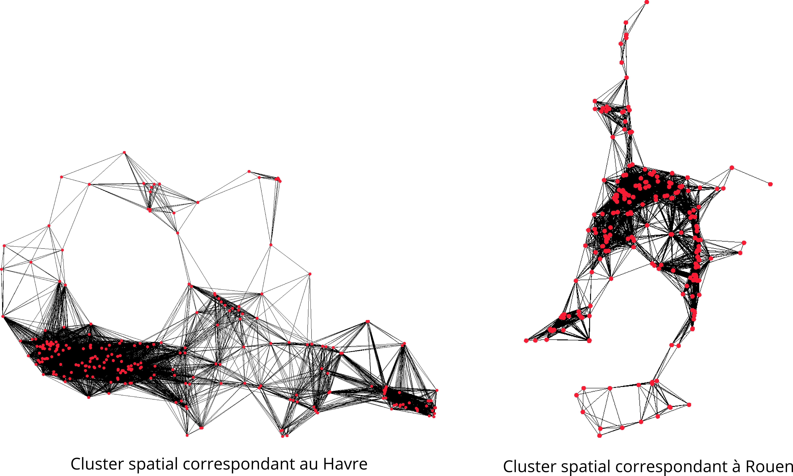
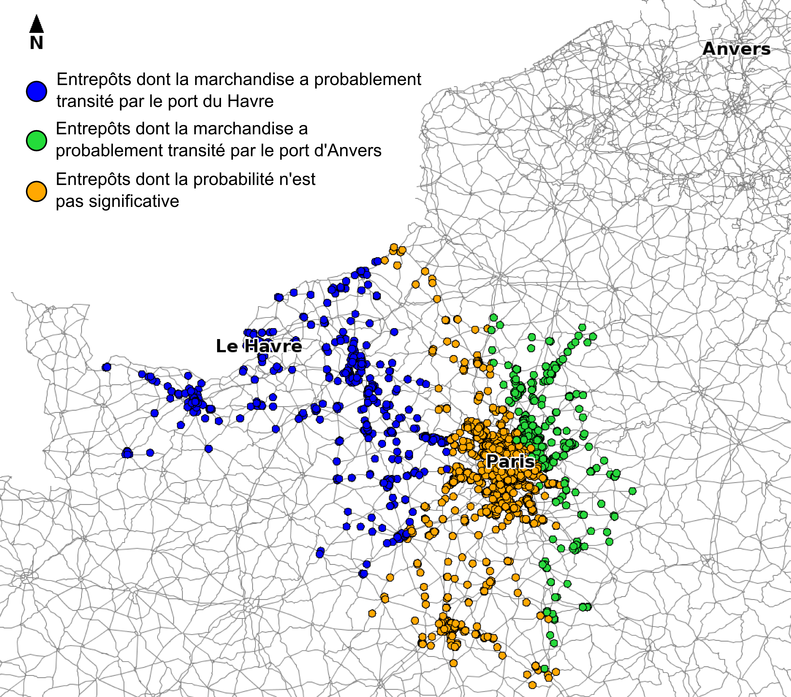
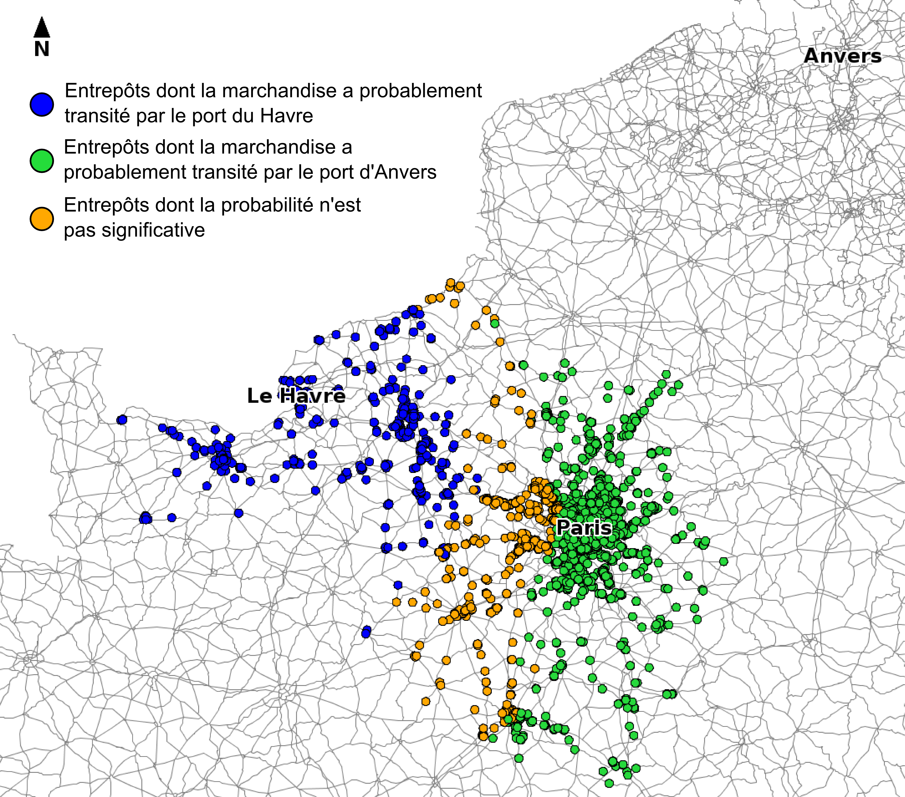
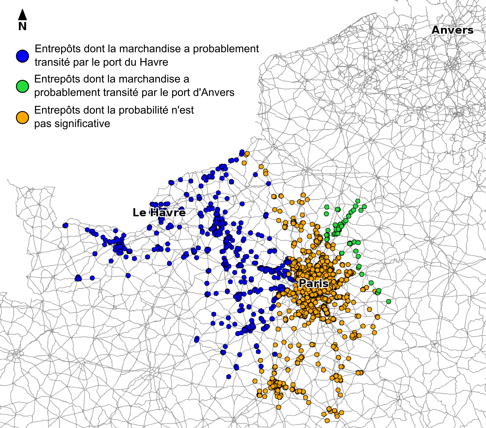

Une approche systémique à base d'agents et de graphes dynamiques pour modéliser l'interface logistique port-métropole
Soutenance de thèse
Le Havre
26 Septembre 2016
Une approche systémique à base d'agents et de graphes dynamiques pour modéliser l'interface logistique port-métropole
Thibaut Démare
Normandie Université - LITIS
Soutenance de thèse
26 Septembre 2016
Directeur de thèse : Cyrille Bertelle
Encadrants : Antoine Dutot et Laurent Lévêque
Rapporteurs : Abderrafiaa Koukam et Guy Melançon
Examinateur : César Ducruet
Invité : Robin Poté
Plan
Systèmes logistiques et problématique
Modélisation
Implémentation
Résultats et analyses
Conclusion et perspectives
Systèmes logistiques et problématique
Présentation d'un système logistique
C'est une composante essentielle d'un système spatial dans lequel les acteurs s'organisent autour d'infrastructures pour faire circuler des flux de marchandises, d'information et financier sur un territoire.
Ces systèmes possèdent des nœuds d'accès par lesquels la marchandise entre ou sort.
Des métropoles, ou aires urbaines, attirent et génèrent les flux de marchandises.
Le système subit plusieurs contraintes de nature différente (spatiale, économique, politique, ou écologique).
L'organisation logistique conduit les flux de marchandises à emprunter des axes préférentiels.
Un organisation distribuée du flux
Figure 1 : Chaque acteur est responsable d'une partie seulement du flux auto-organisé de marchandises. Leurs interactions et méthodes de travail permettent une organisation cohérente.
L'interface port-métropole
Figure 2 : L'interface qui connecte les logistiques portuaire et métropolitaine.
Problématique
On cherche à comprendre, à de multiples échelles, comment des acteurs, autonomes et très hétérogènes, s'organisent collectivement autour des infrastructures à leurs dispositions pour gérer des flux de marchandises soumis à un ensemble de contraintes.
On souhaite reconstruire un système logistique par la modélisation.
Nous proposons un modèle agent qui représente les propriétés, contraintes et comportements locaux d'un système logistique pour en reproduire le fonctionnement global grâce à la simulation.
La simulation permet alors de tester différents scénarios pour comprendre comment des décisions locales impactent l'ensemble du système.
Figure 3 : Exemples de résultats obtenus grâce au modèle.
Modèles de trafic de marchandises
Modèles de trafic international et national
Modèles agrégés : considèrent des données agrégées de quantité produite et consommée au sein de zones d'un territoire pour estimer la part des flux transitant entre ces zones. (Tavasszy et al., 1998) (Zondag et al., 2010)
Modèles non agrégés : une partie des données est désagrégée et permet d'obtenir des résultats plus réalistes et précis. (Samini et al., 2010)
Modèles de trafic local
Modèles portuaires : ils fonctionnent sur des territoires beaucoup plus petits dont l'accès aux données est simplifié. Ces modèles permettent souvent de mettre en avant les capacités d'absorption d'un trafic plus soutenu au sein du port. (Parola et al., 2005)
Modèles urbains : ces modèles sont le plus souvent liés à des problématiques d'occupation des routes et de congestion. L'accès aux données reste délicat du fait d'une compétition entre les acteurs de la logistique présents sur ces territoires. (Gonzalez-Feliu et al. 2012)
Contribution
On veut avoir la capacité d'observer comment les propriétés macroscopiques du système émergent des propriétés et comportements locaux (ex: apparition d'axes préférentiels).
Les modèles multi-agents sont adaptés : ils permettent de modéliser chaque acteur et infrastructure par des agents définis individuellement et localement par leurs propres propriétés et comportements.
Cette approche permettra de mettre en avant la complexité du système au travers du modèle et de la simulation.
Contribution
Les flux de marchandises sont créés par les décisions des acteurs. Ils ne proviennent pas d'une base de données pré-établie.
Ce sont les comportements internes et autonomes des agents qui sont à l'origine de l'organisation logistique.
Le système évolue dans le temps (création et disparition d'agents, dynamisme du réseau de transport).
Les agents s'adaptent en temps réel à ces évolutions.
Modélisation
Architecture générale

Figure 4 : Représentation générale du modèle
Les agents
Chaque acteur et infrastructure de la réalité est représenté par un agent.
Ils ont des règles prédéfinies décrivant comment ils peuvent interagir entre eux et comment ils doivent se comporter en fonction de leurs perceptions.
Un graphe dynamique représente les interactions entre chaque agent.

Figure 5a : Graphe des interactions possibles entre les différents agents.

Figure 5b : Graphe des interactions possibles entre les différents agents.

Figure 5c : Graphe des interactions possibles entre les différents agents.

Figure 5d : Graphe des interactions possibles entre les différents agents.
Le réseau de transport

Figure 6 : Un réseau multi-modal et dynamique
Implémentation
La plateforme de simulation
Le modèle a été implémenté dans une plateforme de simulation orientée agent et appelée GAMA.
L'implémentation simule l'évolution du système heure par heure grâce à des agents réactifs.
On utilise des données réelles qui concernent l'axe Seine afin d'effectuer des analyses et de permettre de confronter le modèle à des données réelles.
Cet axe est principalement représenté par le trafic routier (environ 90% du trafic). L'implémentation n'est donc pas encore multi-modale.
Les agents
Figure 7 : Les agents implémentés.
Stratégies et dynamisme d'interactions
Quatre stratégies possibles pour concevoir un réseau d'approvisionnement.
Un seuil de réapprovisionnement comme stratégie de contrôle des stocks.
Une compétition entre les prestataires.
Paramétrage de la simulation
Les données en entrée : le réseau de transport, la localisation et les propriétés de chaque agent,...
La population locale (qui détermine le volume de la consommation).
Les agents prennent des décisions qui s'appuient sur différentes stratégies.
La mise en place de perturbations du système.
...
Résultats et analyses
Détection de clusters spatiaux

Figure 8 : Détection de clusters spatiaux grâce aux composantes connexes d'un graphe de voisinage.
Processus d'atomisation des flux de marchandises
Figure 9 : Le nombre cumulé d'agents Véhicules sur les routes.
Impacts des stratégies de réapprovisionnement sur les ruptures de stock
Émergence des meilleures stratégies de sélection des entrepôts à partir de décisions locales
Figure 10 : Adoption des stratégies les plus efficaces adoption
Compétition entre les ports du Havre et d'Anvers

Figure 11 : Scénario 1 - Le port d'Anvers est 2,8 fois plus attractif que le port du Havre
Compétition entre les ports du Havre et d'Anvers

Figure 12 : Scénario 2 - Le port d'Anvers est 4 fois plus attractif que le port du Havre
Compétition entre les ports du Havre et d'Anvers

Figure 13 : Scénario 3 - Le port d'Anvers est 2 fois plus attractif que le port du Havre
Impacts de l'attractivité des ports sur le trafic
Conclusion et perspectives
Points importants
On a mis en évidence la nécessité de prendre en compte la complexité du fonctionnement d'un système logistique (multi-échelle, rétro-action, interactions multiples, fonctionnement distribué,...).
Nous avons utilisé un modèle orienté agent et des graphes dynamiques.
Cette méthode se veut flexible car elle nous permet de proposer des implémentations pour plusieurs systèmes logistiques différents.
Les graphes dynamiques rendent compte de l'évolution du trafic sur un réseau de transport multi-modal.
Les agents s'auto-organisent pour gérer les flux de marchandises et s'adaptent d'eux-mêmes et en temps réel aux perturbations du système.
Points importants
Le modèle et son implémentation permettent entre autres d'étudier les impacts de l'attractivité des ports sur les flux logistiques.
Les agents peuvent adopter différentes stratégies qui ont des impacts sur le système.
Des critères de performances conduisent les agents à adopter préférentiellement les stratégies les plus efficaces.
Capacité du modèle à étudier la résilience du système, notamment en permettant aux agents de s'adapter de manière autonome à différents scénarios.
Perspectives
Dans un premier temps, on va améliorer la simulation et implémenter la multi-modalité prévue par le modèle.
On veut également poursuivre un travail de confrontation des résultats avec des données réelles (notamment via des filières spécifiques tel que le e-commerce).
Bien qu'il existe déjà des mesures de performance et des coûts divers, on voudrait intégrer la notion de coûts financiers dans l'implémentation.
On souhaite proposer aux utilisateurs de nouvelles manières de perturber le système pour confronter les agents à des scénarios réalistes et variés. Par exemple :
Bloquer les livraisons en partance d'un entrepôt ou d'un fournisseur.
Augmenter ou diminuer significativement la consommation de marchandises dans des lieux précis.
Enfin, on aimerait effectuer une analyse approfondie des réseaux émergeant au cours d'une simulation, afin, entre autres, de détecter des communautés d'acteurs.
Merci pour votre attention !
thibaut.demare@univ-lehavre.fr
Citations
Lóránt A Tavasszy, Ben Smeenk, and Cees J Ruijgrok. A dss for modelling logistic chains in freight transport policy analysis. International Transactions in Operational Research, 5(6):447 – 459, 1998. ISSN 0969-6016. doi : http://dx.doi.org/10.1016/S0969-6016(98)00045-8.
Barry Zondag, Pietro Bucci, Padideh Gützkow, and Gerard de Jong. Port competition modeling including maritime, port, and hinterland characteristics. Maritime Policy & Management, 37(3) :179–194, 2010.
Amir Samimi, Abolfazl Mohammadian, and Kazuya Kawamura. A behavioral freight movement microsimulation model : method and data. Transportation Letters, 2(1) :53–62, 2010. doi : 10.3328/TL.2010.02.01.53-62.
Francesco Parola and Anna Sciomachen. Intermodal container flows in a port system network: Analysis of possible growths via simulation models. International Journal of Production Economics, 97(1):75–88, 2005. ISSN 0925-5273. doi: http://dx.doi.org/10.1016/j.ijpe. 2004.06.051.
David L. Huff. Defining and estimating a trading area. Journal of Marketing, 28(3): pp. 34–38,1964.
Alfonso Shimbel. Structural parameters of communication networks. The bulletin of mathematical biophysics, 15(4): 501–507, 1953. doi: 10.1007/BF02476438.
Publications
Thibaut Démare, Cyrille Bertelle, Antoine Dutot, and Laurent Lévêque. Interface maritime et interface métropolitaine : vers la modélisation de l’axe seine par les réseaux. In Laurent Beauguitte (coord.), editor, Les réseaux dans le temps et dans l’espace, Paris, Actes de la deuxième journée d’études du groupe fmr (flux, matrices, réseaux), pages 249–263, 2013.
Thibaut Démare, Cyrille Bertelle, Antoine Dutot, and Laurent Lévêque. Agent-based model and networks : the modelling of the maritime and metropolitan interfaces of the seine axis. In Devport international conference for ports, maritime transport and regional development : Adaptation of maritime, port and logistics actors to hazards of globalization, June 2014.
Thibaut Démare, Cyrille Bertelle, Antoine Dutot, and Laurent Lévêque. Logistic corridors modelled with agent-based approach and dynamic graphs. In 4th International Conference on Advanced Logistics and Transport (ICALT), pages 199–204, May 2015. doi : 10.1109/ICAdLT.2015.7136619.
Thibaut Démare, Cyrille Bertelle, Antoine Dutot, and Laurent Lévêque. Agent-based approach and dynamic graphs to model logistic corridor. Procedia Computer Science, 52 (0) :968 – 973, 2015. ISSN 1877-0509. doi : http://dx.doi.org/10.1016/j.procs.2015.05.174. The 6th International Conference on Ambient Systems, Networks and Technologies (ANT-2015), the 5th International Conference on Sustainable Energy Information Technology (SEIT-2015).
Thibaut Démare, Cyrille Bertelle, Antoine Dutot, and Laurent Lévêque. A systemic approach with agent-based model and dynamic graphs to understand the organization of a logistic system. In Arnaud Serry and Laurent Lévêque, editors, Short Sea shipping : Myth or future of regional transport, chapter 12, pages 211–223. Editions EMS, May 2016.